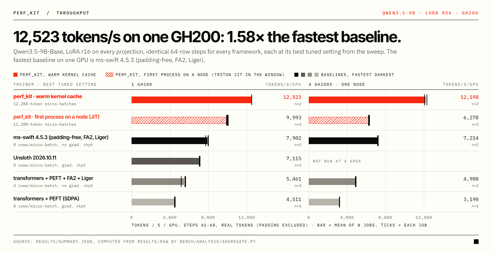
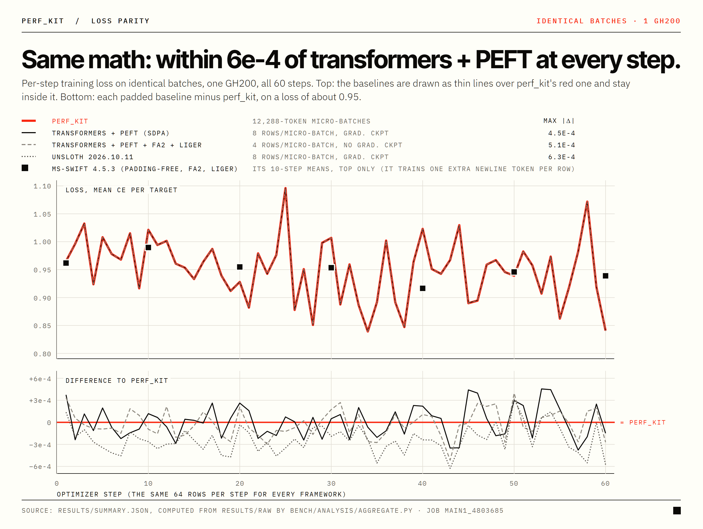
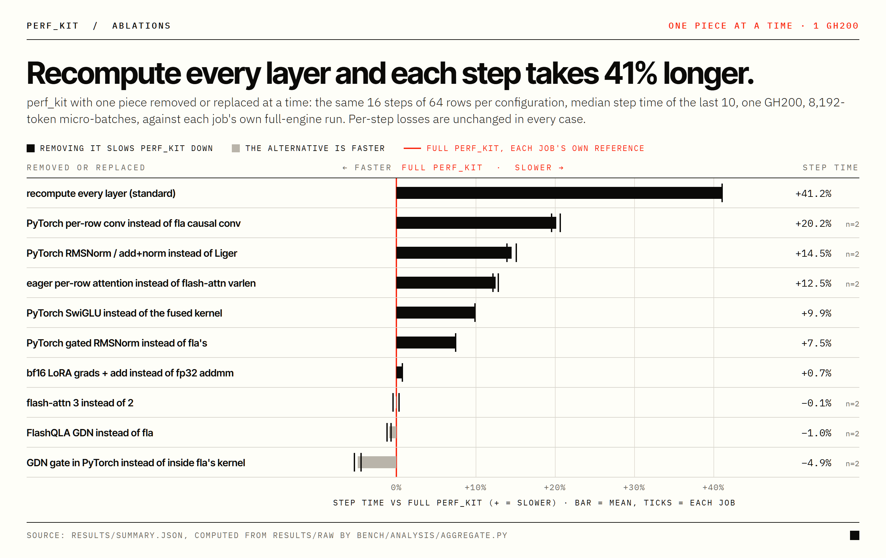
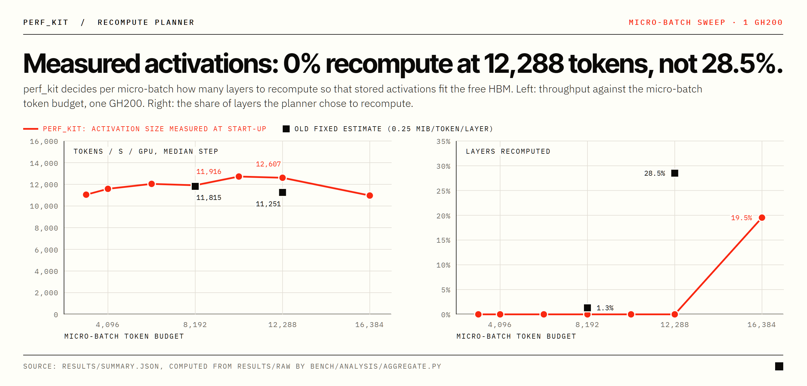

1The problem
Qwen3.5 and the larger Qwen3.8-27B are hybrid decoders: three of every four layers are Gated DeltaNet (GDN) [2] linear-attention layers, a gated delta-rule recurrence computed in chunks after a short causal convolution, and the fourth is gated softmax attention. LoRA [1] freezes every base weight and trains low-rank adapters on every projection. That combination has an unusual cost structure:
- The useful FLOPs are almost all frozen GEMMs. Per token the frozen projections cost 2N forward and 2N for the input gradient; no weight gradient is needed. LoRA adds about 0.8% of the FLOPs at r16 on the 9B and about 5% at r128 on the 27B. Everything else on the GPU timeline is overhead.
- The standard stack runs GDN padded. transformers [7] uses fla's [3] Triton kernels for the recurrence, but its short convolution falls back to a PyTorch
conv1dwithout thecausal-conv1dpackage, which has no aarch64 wheel. That fallback cannot respect row boundaries in packed batches. - PEFT's LoRA wrappers are launch-heavy. Each adapted Linear becomes several kernels plus autograd bookkeeping in both directions, and fp32 adapters under bf16 autocast are re-cast at every forward.
- Grace dispatches slowly. PyTorch op dispatch on the Grace CPU is reported at about 2.5× the cost of a fast x86 host [14], so launch-bound code that is invisible on an x86 H100 node shows up as GPU idle time on GH200.
- The GPUs run power-capped. The GH200 module limit on our cluster is 660 W (GPU + Grace + memory). Under training load the SM clock sits at 1.4–1.8 GHz, not the 1.98 GHz the 989 TFLOPS peak assumes, and the software power cap was active in 82–100% of samples in every arm. Faster code draws more power and runs at a lower clock (perf_kit about 1.43 GHz, the padded baselines 1.55–1.80 GHz), which is why we report a clock-adjusted MFU beside the nominal one.
Before writing any code we profiled the plain transformers + PEFT trainer on the 27B (internal, private data): 11–14% MFU, GPU idle 29% of the time, copies and casts 25% of kernel time, while the GEMMs themselves already ran at about 620 TFLOPS. The kernels were fine; everything around them was not.
Contributions.
- A LoRA engine for the Qwen3.5 hybrid family and dense Llama / Mistral / Qwen2 / Qwen3 decoders whose loss and gradients are tested against transformers + PEFT in float64 (Sections 3–4).
- A same-work benchmark: identical step sets, token ids and init adapter for five frameworks, each at its best swept setting, repeated across jobs and nodes (Section 2).
- Ten one-at-a-time ablations that attribute the speed-up, and a measured recompute planner that is 11–12% faster than the fixed estimate it replaces (Sections 5–6).
- The negative results, two bugs found while preparing the release, and an explicit list of what the evidence does not show (Sections 3, 8, 9).
2Headline results
Setup. Qwen3.5-9B-Base (bf16), LoRA r16 / α 32 on every projection of the text decoder: 40,108,032 trainable parameters, identical in every framework and checked. The data is the first user/assistant exchange of each conversation of UltraChat 200k [12] (MIT), about 530 tokens per row, 64% of tokens trained, Qwen's chat template with thinking disabled. Step s trains rows [64s, 64s + 64) in every framework, from the same init adapter (checksum logged by every harness), with lr 2e-4, 6 warm-up steps and a cosine to 0.1× over 60 steps, AdamW (0.9, 0.99), no weight decay, clip 1.0, and the loss normalised by the step's global target count.
Each framework at its best. The baselines are transformers + PEFT [7, 8], ms-swift [9] and Unsloth [10]. We swept micro-batch size and gradient checkpointing for every baseline and gave each the same fast kernels where it accepts them: flash-attention 2 [4] (sm_90 build), Liger [6] RMSNorm / SwiGLU / fused linear cross-entropy, and fla's GDN kernels. Padded arms sort each step's rows by length before forming micro-batches. Every arm is launched the same way: one process per GPU pinned to its own Grace, energy-monitored with perun [15], nvidia-smi sampled at 1 Hz. Throughput is real tokens per second per GPU over steps 41–60 of a 60-step run, and MFU follows the model-FLOPs convention of [19]; repeats are separate jobs, mostly on different nodes.

Table 1. Best setting per framework (the full sweep, including the slower and out-of-memory settings, is in results/summary.md). Tokens/s per GPU over steps 41–60, mean (min–max) of n jobs. "Warm" = Triton kernel cache already populated on the node, the steady state of a long job.
| GPUs | Trainer | Setting | n | Tokens/s/GPU | vs perf_kit | MFU | Clock-adj. | SM MHz | Peak GB | Val @60 |
|---|---|---|---|---|---|---|---|---|---|---|
| 1 | perf_kit (warm) | 12,288-token packed micro-batches | 2 | 12,523 (12,523–12,524) | 1.00× | 38.6% | 53.9% | 1,418 | 81.0 | 0.9677 |
| 1 | perf_kit (cold) | same, first process on a node | 4 | 9,993 (9,918–10,077) | 1.25× slower | 30.8% | 42.8% | 1,425 | 81.0 | 0.9677 |
| 1 | ms-swift 4.5.3 (padding-free, FA2, Liger) | 8 rows/micro-batch, no grad. ckpt | 3 | 7,902 (7,728–8,010) | 1.58× slower | 24.4% | 31.2% | 1,548 | 65.9 | 0.9678 |
| 1 | Unsloth 2026.10.11 | 8 rows/micro-batch, grad. ckpt | 3 | 7,115 (7,070–7,158) | 1.76× slower | 21.9% | 29.7% | 1,465 | 22.7 | 0.9675 |
| 1 | transformers + PEFT + FA2 + Liger | 4 rows/micro-batch, no grad. ckpt | 3 | 5,461 (5,197–5,635) | 2.29× slower | 16.9% | 19.3% | 1,738 | 82.5 | 0.9678 |
| 1 | transformers + PEFT (SDPA) | 8 rows/micro-batch, grad. ckpt | 3 | 4,511 (4,476–4,535) | 2.78× slower | 13.9% | 17.2% | 1,605 | 73.4 | 0.9676 |
| 4 | perf_kit (warm) | 12,288-token packed micro-batches | 2 | 12,198 (12,084–12,313) | 1.00× | 37.6% | 51.7% | 1,440 | 69.3 | 0.9676 |
| 4 | ms-swift 4.5.3 (padding-free, FA2, Liger) | 8 rows/micro-batch, no grad. ckpt | 2 | 7,214 (7,193–7,235) | 1.69× slower | 22.2% | 27.8% | 1,582 | 64.4 | 0.9678 |
| 4 | perf_kit (cold) | same, first process on a node | 3 | 6,278 (6,233–6,343) | 1.94× slower | 19.4% | 26.4% | 1,455 | 69.3 | 0.9677 |
| 4 | transformers + PEFT + FA2 + Liger | 4 rows/micro-batch, no grad. ckpt | 2 | 4,908 (4,882–4,934) | 2.49× slower | 15.1% | 17.0% | 1,762 | 58.0 | 0.9677 |
| 4 | transformers + PEFT (SDPA) | 8 rows/micro-batch, grad. ckpt | 2 | 3,190 (3,174–3,207) | 3.82× slower | 9.8% | 11.5% | 1,688 | 52.2 | 0.9678 |
Cold vs warm. perf_kit's first process on a node spends its first ~50 steps JIT-compiling Triton kernel specialisations for the packed lengths it meets; later processes on the node reuse the on-disk cache and run at full speed from step ~10. Steps 41–60 of a cold run still contain compilation, which is why a cold 4-GPU run (6,278 tokens/s/GPU) is slower than ms-swift there. In a multi-hour run the compile cost is a few minutes once; for short runs, TRITON_CACHE_DIR on persistent storage removes it. ms-swift and Unsloth also warm up for 20–30 steps, and the transformers arms are flat from step 10, so steps 41–60 compare every baseline in its steady state.
Padding. The padded arms spend 6% (FA2 + Liger, 4 rows), 14% (SDPA, 8 rows), 14% (Unsloth, 8 rows) and 26% (FA2 + Liger, 16 rows) of their token slots on padding on one GPU, despite sorting each step's rows by length. Even with zero padding, the best of them (Unsloth, 8 rows) would reach about 8,225 tokens/s on one GPU; perf_kit (warm) would still be 1.52× faster.
Scaling. perf_kit keeps its per-GPU throughput from one to four GPUs (12,523 → 12,198) through longest-first rank dealing and one all-reduce per step. The padded arms lose 10–45% per GPU at four GPUs, because each rank then sees only 16 rows of a 64-row step, pads more (up to 54%) and amortises its fixed per-step costs over less work.
3Correctness: the same math

Speed bought with different math would be worthless, so equivalence is tested at three levels.
- Kernels, in float64 on CPU. perf_kit's model is tested against transformers + PEFT for cross-entropy and every LoRA gradient (tolerances 1e-6 / 1e-5), including packed batches: a packed micro-batch equals its rows run one by one.
- Harnesses, in float32 on CPU.
tests/test_bench_parity.pyruns the perf_kit and transformers + PEFT benchmark harnesses on a tiny Qwen3.5 checkpoint and requires equal per-step losses to 2e-5 relative. - End to end, in bf16 on GH200. Per-step losses of perf_kit and transformers + PEFT (with and without FA2 + Liger) differ by less than 6e-4 at every step, and those of perf_kit and Unsloth by at most 6.3e-4 (Figure 2). All start from the same value (step-1 loss 0.9651–0.9656) and end at the same validation loss: 0.96749–0.96778 across all five frameworks, against 1.0454–1.0456 for the base model.
Two bugs found while preparing the release. Both are fixed and covered by tests.
- The "reference" GDN path was not the reference. transformers 5.16 routes the name
torch_chunk_gated_delta_ruleto fla's Triton kernel whenever fla is importable, even for CPU tensors. perf_kit's pure-PyTorch reference imported that name, so on machines with fla installed the "fast vs reference" layer benchmark compared fla with fla: an earlier internal 1.8× figure was really about 23× (46 vs 1,086 ms for four 27B-width layers), and the CPU exactness tests crashed. The reference now unwraps to transformers' own PyTorch function. - The recompute planner over-estimated activations by about 60% (Section 6).
4Method
A LoRA step on a frozen base is dominated by the frozen projections' GEMMs. Everything perf_kit does either keeps those GEMMs fed or removes work around them. Each item is exact, the same math as transformers + PEFT up to floating-point summation order, unless marked otherwise.
4.1Fused projections and fused LoRA, no PEFT wrappers
Projections that read the same input (q/k/v; gate/up; the four GDN input projections) run as one GEMM over a concatenated weight. All LoRA A matrices of a group run as one GEMM, and each B is added with one addmm into the base output. LoRA weights are not autograd leaves: the backward accumulates their gradients straight into fp32 buffers with torch.addmm(acc, a, b, out_dtype=torch.float32, out=acc). That is one cuBLAS call, with no bf16 rounding of the per-micro-batch gradient, no AccumulateGrad nodes and no per-step re-cast of fp32 adapters under autocast.
4.2One flat LoRA store
All adapters live in one fp32 master tensor, with its gradient and a bf16 compute copy whose B is pre-scaled by α/r. The optimizer is a single fused AdamW [17] over one tensor, the gradient all-reduce is one NCCL call, and refreshing the compute copies after a step is two kernels.
4.3Variable-length packing without padding
A micro-batch is one packed sequence plus cu_seqlens: flash-attention varlen for the attention layers, fla's chunked GDN (native grouped value heads, gate and β computed inside the kernel) and fla's causal convolution with cu_seqlens. Targets never cross row boundaries and positions restart per row. transformers' PyTorch convolution fallback ignores row boundaries in padding-free batches, so a packed row would see its neighbour's last three tokens; perf_kit's packed result equals the rows run one by one, tested.
4.4Step sets are separate from layout
The loss is normalised by the step's global target count, so the gradient depends only on which rows a step trains, not on how they are split over ranks and micro-batches. The step set comes from a reproducible sampler; rows are then dealt to ranks longest-first onto the least-loaded rank (LPT [18]) and packed first-fit-decreasing into token-budget micro-batches. On a long-tailed 4-GPU production workload this cut the rank straggler tax from 12–23% of every step to under 1%.
4.5Recompute only what memory requires
Per micro-batch, a plan checkpoints [16] just enough layers, spread evenly over depth, to fit the activation budget. The per-token activation size is measured on the real model with one probe forward when training starts (Section 6).
4.6Fused small operations
Liger RMSNorm and residual-add + RMSNorm, one kernel each way; an own SwiGLU kernel that reads the fused gate|up output in place and writes the fused gradient; fla's gated RMSNorm; torch.split instead of slicing, since a slice's backward zero-fills and copies a full-size gradient; and a chunked frozen LM head with cross-entropy that never materialises [tokens × vocab] logits and runs only at target positions.
4.7No host synchronisation inside a step
Losses and counters accumulate on the GPU and are read only at log steps. Micro-batches are packed and pinned on a CPU thread and copied on a side stream.
4.8Block-FP8 checkpoints kept as FP8 codes
With --storage fp8, a block-FP8 checkpoint's frozen weights stay as FP8 codes and are dequantised bit-exactly to bf16 right before each GEMM by a Triton [13] kernel (about 2.9 TB/s on GH200): the same bf16 weights in half the memory. At 27B this freed about 27 GB and removed nearly all recompute. The 9B benchmark checkpoint is bf16, so this does not apply there.
5Ablations: what each piece is worth
One model load, then the same 16 steps (64 rows each) per configuration from the same LoRA init with a fresh optimizer; median step time of the last 10 steps, every step CUDA-synchronised; one GH200; 8,192-token micro-batches. Two independent jobs on different nodes for most configurations. Each job's first configuration is excluded, because it absorbs the process's JIT warm-up (4–5% slow both times).

Table 2. The same ablations as numbers (step time vs the full engine; per-job values in brackets).
| Removed / replaced | Step time | n |
|---|---|---|
| Recompute every layer (a standard trainer's default) | +41.2% | 1 |
| Per-row PyTorch conv instead of fla's varlen causal conv | +20.2% (+20.7, +19.6) | 2 |
| PyTorch RMSNorm / add + norm instead of Liger | +14.5% (+15.1, +13.9) | 2 |
| Per-row eager attention instead of flash-attention varlen | +12.5% (+12.9, +12.2) | 2 |
| PyTorch SwiGLU instead of the fused gate|up kernel | +9.9% | 1 |
| PyTorch gated RMSNorm instead of fla's | +7.5% | 1 |
| bf16 LoRA grads + add instead of fp32-accumulating addmm | +0.7% | 1 |
| flash-attention 3 instead of 2 | −0.1% (+0.3, −0.5) | 2 |
| FlashQLA GDN kernels instead of fla | −1.0% (−0.7, −1.2) | 2 |
| GDN gate / β in PyTorch instead of inside fla's kernel | −4.9% (−5.3, −4.4) | 2 |
Reading the ablations. The largest single saving is not recomputing what fits in memory (41%). Then come the varlen convolution, which is also what makes packing correct (20%), fused norms (15%) and varlen attention (13%). None of these is a new algorithm; together they remove the work a general-purpose trainer does around the frozen GEMMs.
Two results we did not expect. First, fla's in-kernel GDN gate, perf_kit's default, is slower here: computing g = −exp(A_log) · softplus(a + dt_bias) and β = sigmoid(b) in PyTorch and passing them to fla was 4.4% and 5.3% faster in two jobs. We left the default unchanged because the 27B was not re-measured; PK_DISABLE=gdn_fused_gate switches it. Second, flash-attention 3 [5] and FlashQLA change nothing end to end on the 9B, although FA3 is 12% faster than FA2 as an isolated kernel at the 27B's shapes: at 9B, attention is about 1.5% and GDN about 8% of GPU time, so a kernel win there cannot move the step by much.
6Micro-batch size and the recompute planner

perf_kit decides per micro-batch how many layers to recompute so that stored activations fit the free HBM. Version 0.0 used a fixed 0.25 MiB per token per layer. The 9B actually stores 0.157–0.158 MiB, measured at start-up in every run, so recompute began at about 7.3k tokens with a third of the HBM still free. The release measures the size on the real model with one probe forward (the CUDA allocator's count after a warm-up forward, tested against a real step) and plans with the measurement × 1.05.
At 12,288-token micro-batches the old estimate recomputes 28.5% of the layers (3.03–3.09 s/step); the measured plan recomputes none (2.70–2.76 s/step): 11–12% faster at the same batch. It also makes the fastest setting, 10–12k tokens, reachable without hand-tuning. Past about 12.4k tokens the HBM really is full and recompute starts again (16,384 tokens: 19.5% of layers recomputed, 3.14 s/step). On the 27B the same measurement gives 0.216 MiB per token per layer, so no recompute up to about 3.7k tokens on one GPU with FP8-stored weights.
7The 27B model, and where the time goes now
27B on public data. perf_kit only: Qwen3.8-27B with its block-FP8 checkpoint kept as FP8 codes (28.5 GB of frozen weights), one GH200, the same data and LoRA r16. With 3,600-token micro-batches and no recompute it trains at 3,671 tokens/s, 37.6% MFU (53.4% clock-adjusted at 1,395 MHz). 6,144-token micro-batches need 40% recompute and are 12% slower. No baseline was re-run at 27B on public data.
Table 3. Earlier internal comparison at 27B (October 2026, private SFT data, not reproducible from the repository; results/prior_27b_private_data.json). LoRA r128, 4 GH200, 300 identical steps; MFU by the 4 × 27e9 convention used at the time.
| Trainer | s/step | MFU | Val @300 |
|---|---|---|---|
| transformers + PEFT (recompute every layer) | 5.155 | 13.0% | 0.6866 |
| ms-swift 4.5.3 (with grad. ckpt) | 3.70 | 18.2% | 0.6878 |
| perf_kit (FP8-stored base) | 1.82 | 36.8% | 0.6863 |
ms-swift ran there with gradient checkpointing; on the public 9B benchmark it is 1.7× faster without it, which was not tried at 27B. Read Table 3 as an upper bound on perf_kit's advantage at 27B, not as a measurement of it.
Where the time goes. A torch.profiler capture of two steps (one GH200, 9B, 8,192-token micro-batches) attributes 69% of GPU kernel time to GEMMs, 8% to fla's GDN, 7% to copies and casts, 3.4% to the causal convolution, 3.2% to norms and under 3% to everything else. About 20,200 kernels are launched per step, and the host spends about as long issuing them as the GPU spends executing them. At 9B on one GH200, perf_kit is therefore launch-bound on the Grace CPU: the remaining lever is CUDA graphs or fewer launches, not faster kernels. At 27B the larger GEMMs hide the host (GPU idle about 2–5%). Over the step the GEMMs run at about 480 TFLOPS, about 68% of what the power-capped clock allows.
8What did not work
Table 4. Ideas we measured and did not adopt as defaults.
| Idea | What we measured | Verdict |
|---|---|---|
FP8 forward GEMMs (CUTLASS block-scaled, fp8_forward=True) | 1.1–1.5× per GEMM in isolation including activation quantisation, ~3.7% relative output error; in situ at 27B the step got slower (9.5 vs 6.9 s) | Off by default; lossy, A/B only |
FP8 via torch._scaled_mm | Block scales (1×128 / 128×128) rejected; one accepted layout returned garbage (relative error 1.7e5); row-wise worked but the step ran at 0.71× of bf16 | Not used |
| torchao float8 row-wise | 3–4× slower than bf16 per projection (eager) | Not used |
| FlashQLA (TileLang GDN kernels) | 17% slower than fla's GDN forward + backward at 27B shapes, slightly larger error; −1.0% step time end to end on the 9B (inside noise) | PK_GDN_BACKEND=flashqla, not default |
| flash-attention 3 | 12% faster attention kernel at 27B shapes, same error; −0.1% end to end on the 9B (attention is ~1.5% of GPU time) | Opt-in PK_ATTN_BACKEND=fa3 |
| fla's in-kernel GDN gate (current default) | 4.4–5.3% slower than computing gate / β in PyTorch on the 9B (n = 2), identical losses | Default kept until re-measured at 27B |
| fp32-accumulating LoRA-gradient addmm | Replacing it with bf16 grads + add: +0.7% step time at r16, i.e. noise; kept for accuracy, not speed | Kept |
| CUDA graphs / regional compile | GPU idle ~2–5% with the fused path at 27B | Not pursued at 27B; might pay at small models |
| Activation offload to Grace memory | Bit-identical (tested); the only in-situ trial (27B, 1 GPU) ran out of host memory, and with 1.5× micro-batches out of HBM | Experimental, no measured speed-up |
| Adaptive recompute without freeing memory first | Slower than fixed recompute in the old trainer | Superseded by the measured plan |
9Limitations and threats to validity
- One machine type. Every number is from NVIDIA GH200 120GB superchips (96 GB HBM3 per GPU) on one cluster, power-capped at 660 W per module. There are no H100, A100 or B200 numbers. x86 hosts dispatch kernels faster than Grace, which helps launch-bound baselines more than perf_kit, so the speed-up there is probably smaller. The design is not GH200-specific; the tuning is.
- LoRA only. No full fine-tuning, no QLoRA / 4-bit base, no DoRA / rsLoRA, and no dropout on the adapter path: the fused LoRA assumes dropout 0, the setting most LoRA SFT recipes use.
- Model coverage. Fast paths exist for the Qwen3.5 hybrid family, tested on the 9B and a 27B checkpoint, and for Llama / Mistral / Qwen2 / Qwen3 dense decoders. The dense models are CPU-exact and GPU-checked against transformers + PEFT but not benchmarked on a real checkpoint. Sliding-window attention, MoE layers, vision towers and multi-token-prediction heads are not trained.
- Short rows. The public benchmark rows average about 530 tokens. Very long sequences shift the balance towards attention and GDN kernels, where perf_kit uses the same kernels the baselines can use.
- Single node. The benchmark covers one GPU and one 4-GPU node. perf_kit has run on two nodes in production (NCCL over Slingshot), but there is no controlled multi-node comparison.
- Baselines at their best on this machine, not everywhere. We tuned micro-batch size and gradient checkpointing per baseline and gave them the same fast kernels where they accept them. transformers cannot use padding-free batches for Qwen3.5 here without
causal-conv1d(no aarch64 wheel), so its arms are padded; ms-swift runs padding-free; Unsloth uses its own patched model and offloaded checkpointing inside the same padded loop. Newer releases of any of them may be faster. - Short runs. Throughput is measured over steps 41–60 of 60-step runs, repeated across jobs, and loss parity over 60 steps. That shows the math is the same, not that long runs converge the same. perf_kit has trained multi-thousand-step production runs (27B and 9B, private data, up to two nodes) at about 36–37% MFU, but those are not part of this benchmark.
- Small n. Most arms have two to four separate jobs; the two warm 1-GPU perf_kit runs came from one job on one node.
10Compute and energy
The entire public benchmark, including smoke tests, tuning sweeps, out-of-memory settings and failed arms, used 9.33 GH200-hours on Arrhenius. Every job ran under perun [15], which records GPU-module and network energy per job, and nvidia-smi was sampled at 1 Hz for clocks and power. This repository does not include a per-job energy summary, so we do not quote an energy total; there is also no independent energy meter on the cluster to cross-check perun against.
The power cap matters for interpreting every number above. In every arm the software power cap was active in 82–100% of nvidia-smi samples, and the faster engine ran at the lower clock (perf_kit 1.42–1.46 GHz, the padded baselines up to 1.76 GHz). Nominal MFU therefore understates the hardware utilisation of all frameworks, and understates perf_kit's most; the clock-adjusted column in Table 1 corrects for it.
11Reproducibility
Everything runs from the repository; the only external inputs are the model weights and the public data.
- Data. Download the two parquet files of UltraChat 200k at revision
8049631c405ae6576f93f445c6b8166f76f5505aand build the single-turn set withbench/data/prepare_ultrachat.py. The output must reproduce thetrain.jsonlandval.jsonlsha256 recorded inresults/data_manifest.json. - Weights.
Qwen/Qwen3.5-9B-Base[11] (Apache-2.0) in a local directory. - Site file. Copy
bench/slurm/site_env.example.shand fill in your modules, virtual environments and library directories. - Run.
bench/slurm/bench_arms.sbatchruns a list of arms in one job; an arm token is<framework>[@<micro>][+nockpt], and the same token twice gives a repeat. The exact arm lists of this report are inWRITEUP.md. Without Slurm, runrun_train.pyorbench/e2e/hf_peft_train.pydirectly with the same flags (--step_order sequentialfor perf_kit, so every framework sees the same step sets). - Analyse. Copy each run directory to
results/raw/, thenpython bench/analysis/aggregate.py --raw results/raw --out resultsandpython bench/analysis/plots.py --summary results/summary.json --out figures. Every table and figure in this report is produced by those two scripts.
python -m pytest -q tests # CPU exactness vs transformers + PEFT, packing, planner,
# CLI stop / resume, benchmark-harness parity
python -m perf_kit.train --model Qwen3.5-9B-Base --train train.jsonl --val val.jsonl --out runs/r16 \
--rank 16 --alpha 32 --lr 2e-4 --warmup 50 --global_batch 64 --micro_tokens 12288 --storage bf16
Tested stack (GH200, October–November 2026): Python 3.13, torch 2.13.0+cu130, transformers 5.16.1, peft 0.20.0 [8], triton 3.7.1, flash-attn 2.8.3 (sm_90 source build), flash-linear-attention 0.5.2, liger-kernel 0.8.4, optional flash-attn 3. CPU tests also pass on Windows / x86 with torch 2.5.1. Adapters are written in PEFT format and load in peft or vLLM.
·Acknowledgements, availability, citation and references
Acknowledgements. We acknowledge EuroHPC JU for awarding the project ID EHPC-AIF-2026PG01-907 access to resources on Arrhenius GPU at NAISS, Sweden. All of perf_kit's development and every benchmark in this report ran under that EuroHPC AI Factory allocation; we thank the EuroHPC Joint Undertaking and NAISS for making this work possible, and for making it possible to do openly. We thank the authors of flash-linear-attention, flash-attention, Liger Kernel, PEFT, transformers, ms-swift, Unsloth, UltraChat and perun for their open releases, on which this work and its baselines rest.
Availability. Code, benchmark harnesses, raw logs and the analysis scripts are released under the Apache-2.0 licence. The repository's README.md holds the quickstart and supported-model table; WRITEUP.md holds the long-form method notes this report is based on.
Citation. Please cite the software via CITATION.cff:
@software{perf_kit_2026,
title = {perf_kit: fast, exact LoRA fine-tuning for hybrid
Gated-DeltaNet LLMs on NVIDIA GH200},
author = {Deleanu, Stefan-Lucian},
organization = {LogoLabs.org},
year = {2026},
version = {0.1.0},
license = {Apache-2.0},
note = {EuroHPC AI Factory allocation EHPC-AIF-2026PG01-907,
Arrhenius (NAISS)}
}
References
- E. J. Hu et al. LoRA: low-rank adaptation of large language models. arXiv:2106.09685.
- S. Yang, J. Kautz, A. Hatamizadeh. Gated delta networks: improving Mamba2 with delta rule. arXiv:2412.06464.
- flash-linear-attention (fla). github.com/fla-org/flash-linear-attention.
- T. Dao. FlashAttention-2: faster attention with better parallelism and work partitioning. arXiv:2307.08691.
- J. Shah et al. FlashAttention-3: fast and accurate attention with asynchrony and low-precision. arXiv:2407.08608.
- P.-L. Hsu et al. Liger Kernel: efficient Triton kernels for LLM training. arXiv:2410.10989.
- T. Wolf et al. Transformers: state-of-the-art natural language processing. arXiv:1910.03771.
- PEFT: parameter-efficient fine-tuning. github.com/huggingface/peft.
- Y. Zhao et al. SWIFT: a scalable lightweight infrastructure for fine-tuning (ms-swift). arXiv:2408.05517.
- Unsloth. github.com/unslothai/unsloth.
- Qwen team. Qwen3.5-9B-Base. huggingface.co/Qwen/Qwen3.5-9B-Base.
- N. Ding et al. Enhancing chat language models by scaling high-quality instructional conversations (UltraChat). arXiv:2305.14233; data: HuggingFaceH4/ultrachat_200k.
- P. Tillet, H. T. Kung, D. Cox. Triton: an intermediate language and compiler for tiled neural network computations. MAPL 2019. triton-lang.org.
- NVIDIA Transformer Engine, issue #2053 (CPU launch overhead on Grace). github.com/NVIDIA/TransformerEngine/issues/2053.
- J. P. Gutiérrez Hermosillo Muriedas et al. perun: benchmarking energy consumption of high-performance computing applications. Euro-Par 2023. doi:10.1007/978-3-031-39698-4_2.
- T. Chen et al. Training deep nets with sublinear memory cost (activation checkpointing). arXiv:1604.06174.
- I. Loshchilov, F. Hutter. Decoupled weight decay regularization (AdamW). arXiv:1711.05101.
- R. L. Graham. Bounds on multiprocessing timing anomalies (LPT scheduling). SIAM J. Appl. Math. 17(2), 1969.
- A. Chowdhery et al. PaLM: scaling language modeling with pathways (the MFU metric). arXiv:2204.02311.